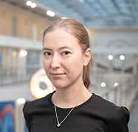
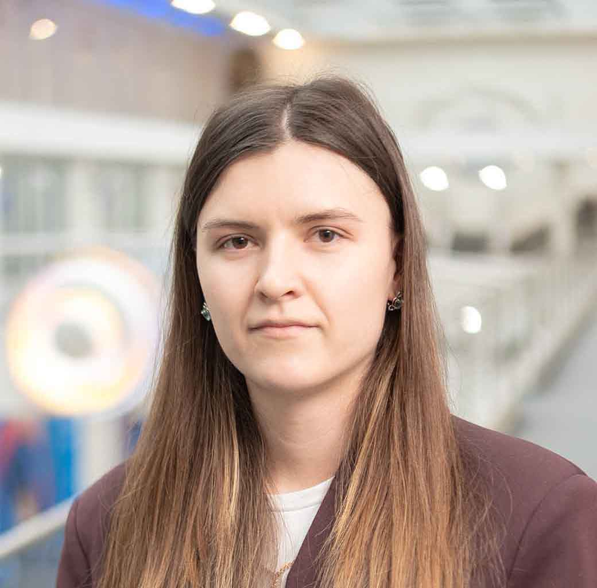
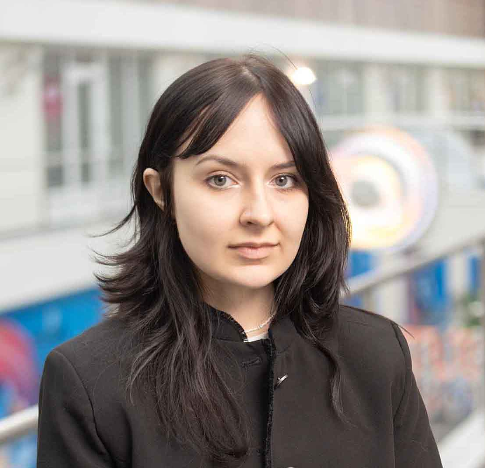
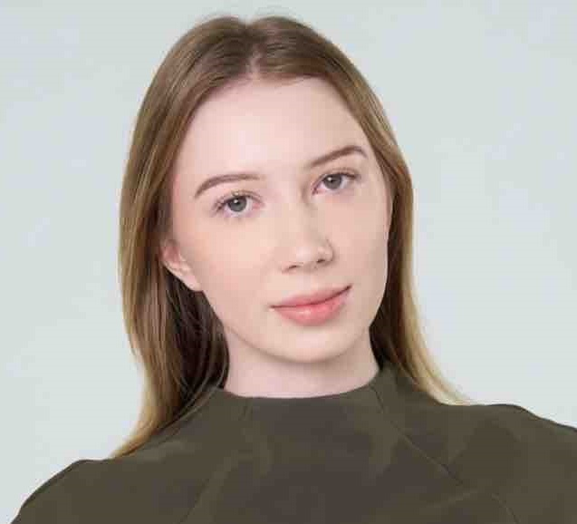
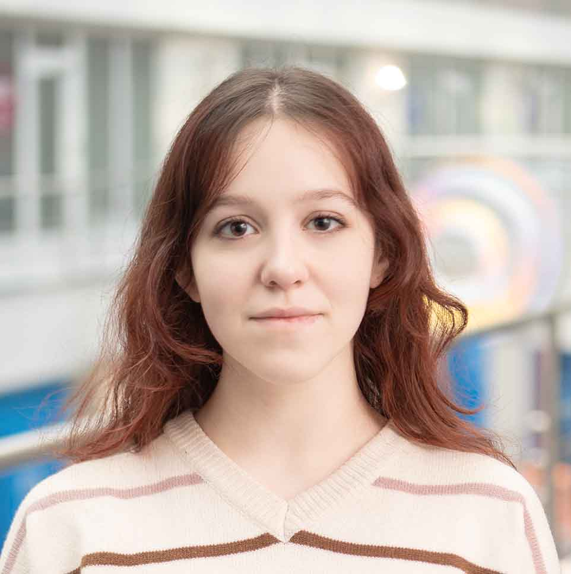
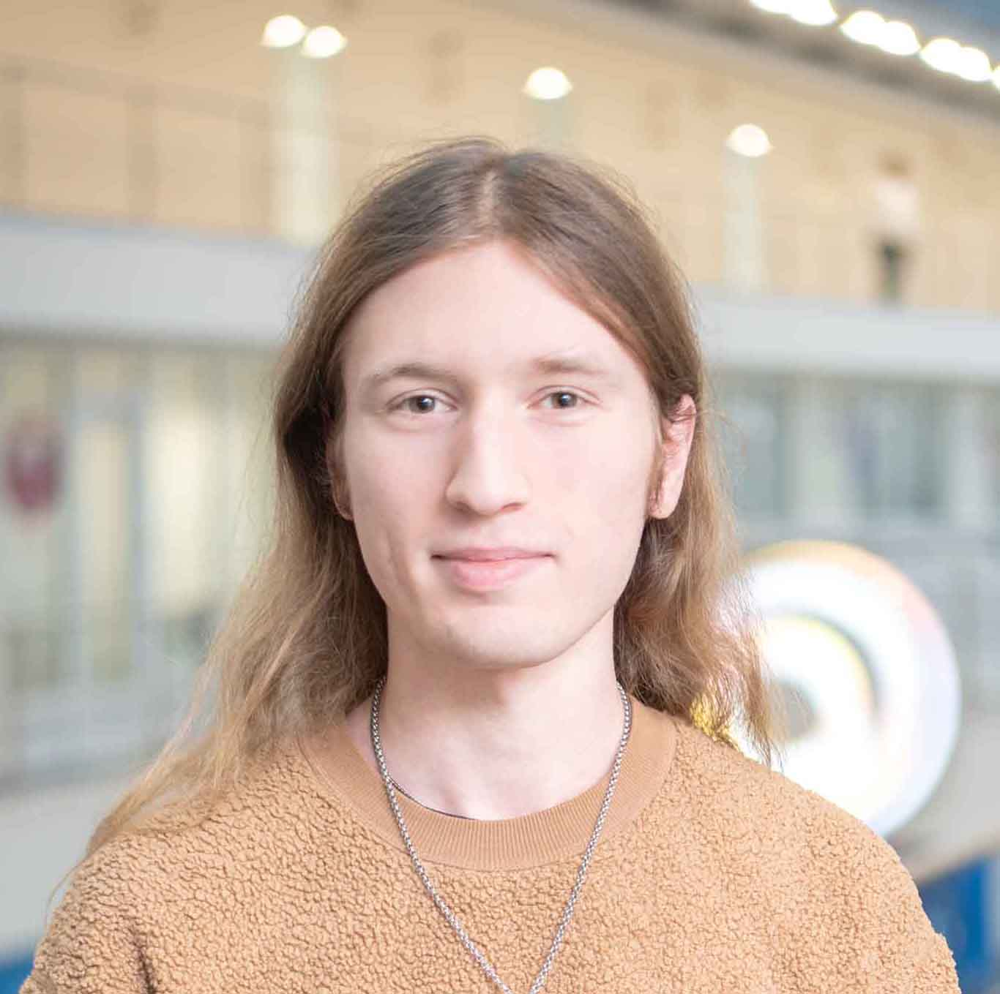
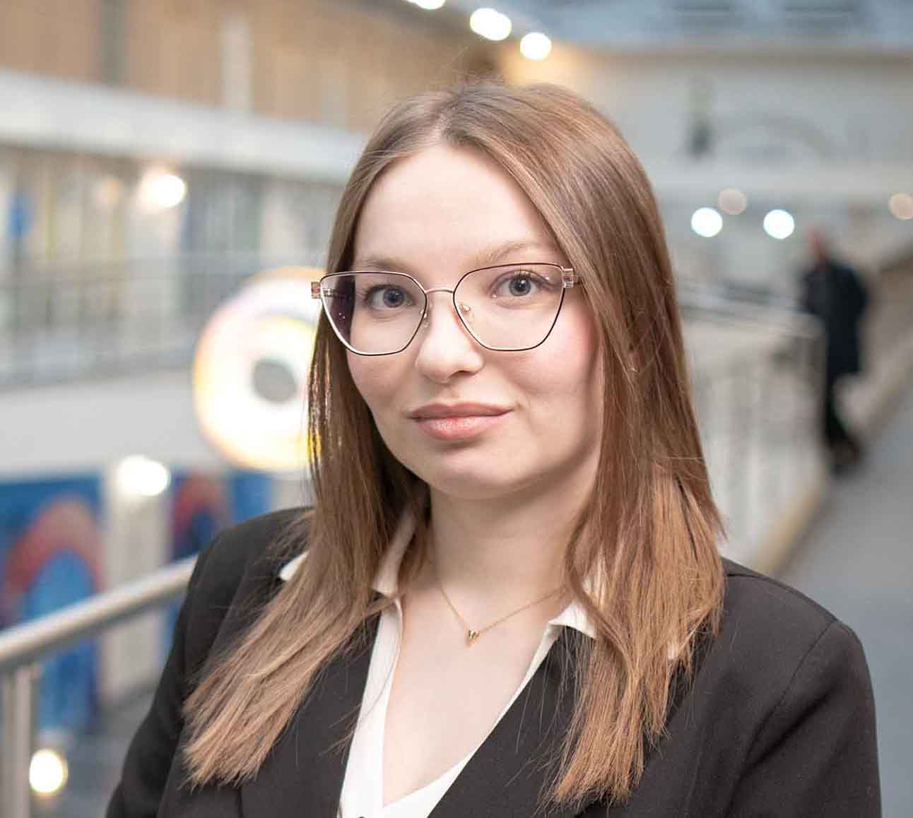
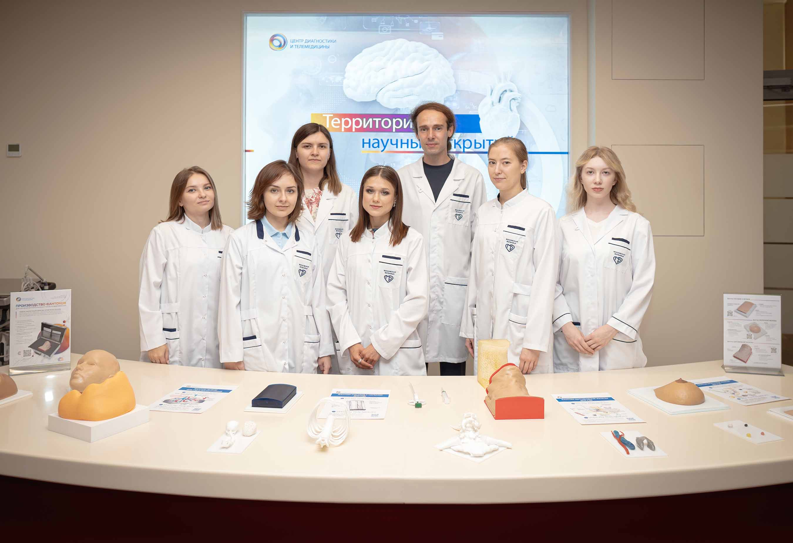

We develop end‑to‑end solutions for ultrasound imaging — from open‑source C++ frameworks (RUFUS) and tissue‑mimicking phantoms to augmented reality navigation for ultrasound‑guided interventions. Our goal is to make ultrasound research more reproducible, training more effective, and interventions more precise.
Need something else? Just ask — we love challenging tasks.
We believe in reproducible research. Our datasets and 3D models are freely available for academic use under CC BY-NC-SA license.
📬 All datasets and STL files are free for non-commercial use. Questions? Contact us at leonovd.v@ya.ru







We are always looking for motivated students, postdocs, and engineers. If you are interested in ultrasound imaging, signal processing, medical phantoms, or augmented reality — please contact us at leonovd.v@ya.ru.
